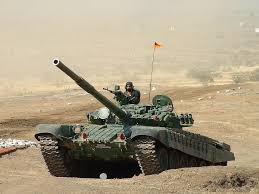
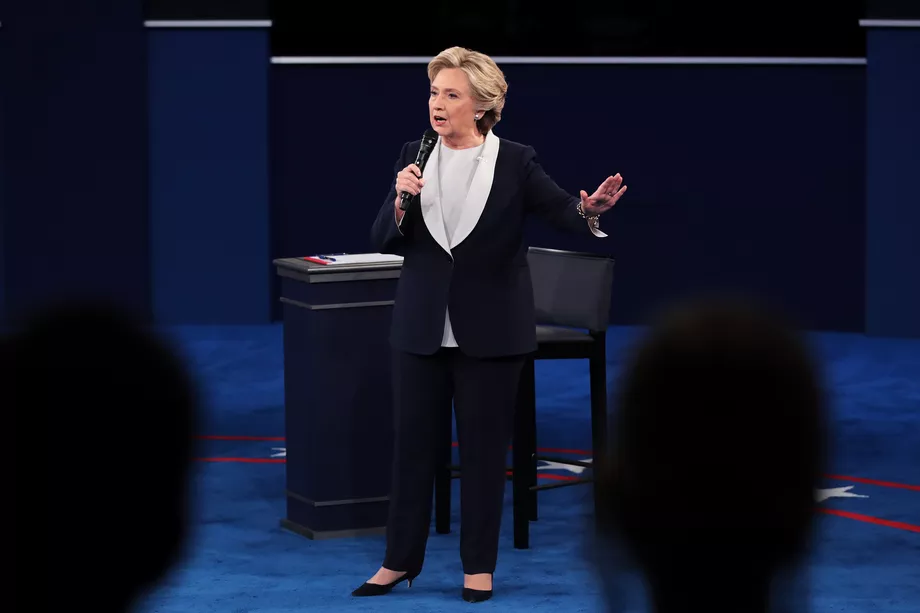
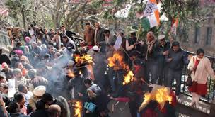

International news
War not an option for India and Pakistan: Pakistani envoy to US
updated October 23,2016

WASHINGTON: Asserting that war is not an option for India and Pakistan, a top Pakistani diplomat has said Islamabad believes there is a need to resolve all bilateral disputes, including the Kashmir issue, through dialogue . "Going to war is not an option at all. The reason is both the countries need economic development, have to work for the welfare of the people," Pakistan ambassador to the US Jalil Abbas Jilani told a group of reporters here at an award ceremony held on the sidelines of the annual fall meeting of the World Bank and the International Monetary Fund.
After five days of getting no love from Washington on the Kashmir issue, the envoys, who started their Washington trip with bluster, ended it with a whimper. At the start of their 5-day trip, the Pakistani envoys warned that their country would join the "China-Russia-Iran" axis if the US didn't intervene in the Kashmir issue. They even sent a message to India that they would invoke the Maoists and small rebellions in northeast India , if India continued to talk about Balochistan, TOI reported yesterday.
At the end of their trip yesterday, though, the envoys struck a more conciliatory note saying "there's no role for militancy in policy-making and non-state actors cannot be allowed to operate from the Pakistani territory," the Pakistani newspaper wrote.
Mushahid Hussain Syed, one of the two envoys sent to the US to present Pakistan's case on Kashmir, said that there was complete consensus on this issue in parliament, where all parties jointly drafted a 22-point resolution asking the government to end militancy. Syed's comments came a few days after Dawn reported that the civilian government recently sent a blunt message to the country's military leadership, saying Pakistan will be completely isolated if it didn't stop cross-border militant attacks.
Dawn further wrote today that diplomatic sources in Washington said the Pakistan PM Nawaz Sharif's envoys "noticed the damage the militancy has done to Pakistan's image in general, and to the Kashmir cause in particular, and it is likely to figure prominently in their assessment of the current mood in Washington."
Referring to the unrest in Kashmir, following the killing of Hizbul Mujahideen terrorist Burhan Wani , the news report said that "in the US media, the Uri attack sidelined whatever sympathy the uprising" in Kashmir had attracted.
Radioactive leak at Delhi's Indira Gandhi International Airport's cargo terminal
updated October 23,2016
NEW DELHI: A radioactive leak on Sunday occurred from a medical shipment at cargo terminal of Indira Gandhi International Airport here, following which authorities have cordoned off the area.
The Atomic Energy Regulatory Board (AERB) has rushed its team to the spot.
"A call was received from the airport around 10.45am regarding suspected radioactive leak from medical equipment," said Atul Garg, Chief Fire Office
He said the equipment has come from Air France plane and was kept at the cargo terminal.
The entire area has been cordoned off and National Disaster Management Authority (NDMA) has also been informed about the incident, Garg said.
The cargo complex has been vacated by officials as a preventive measure.
"The area is 1.5 km away from passenger area and was evacuated and cordoned off," police said.
3 winners and 2 losers from the 2nd presidential debate
updated October 23,2016
Winner: Hillary Clinton
It was clear going into the second presidential debate that this would be no ordinary political event. This would be huge. It would be the first time Donald Trump would have to defend his hot mic comments bragging about sexual assault in front of a hostile opposing candidate and tough moderators. It would be the defining moment of the election, a glorious train wreck. It would be “whatever the opposite of the moon landing is.”
And oh, dear reader, it was. It really, really was. It wasn’t like some past bombshell debates, with one catastrophic or shocking moment that overshadowed the rest. It was instead a continual disaster for Trump, a slow-boiling catastrophe with flare-ups and temper tantrums from the candidate but an enviable, consistent stream of madness.
Trump lost, for sure — and you’ll read more about that in a second. But here’s who else fell behind tonight, and who came up ahead.
Clinton had one task in the debate: Do no harm. She’s ahead in the polls. Trump just got hit with the worst scandal of the campaign so far. His elite Republican support is rapidly abandoning him. She just needs to not screw it up and let Trump continue to dig his own grave.
She did that, and then some. She continued her effective strategy from the first debate of maintaining total discipline: never interrupting, never raising her voice, never getting remotely agitated. The point is to draw a contrast from Trump’s constantly flaring temper and clear inability to abide by basic debate rules, and it was effective.
She even got in some solid burns amidst Trump’s meltdowns:
COOPER:Please allow her to respond. She didn't talk while you talked.
CLINTON:Yes, that's true, I didn't in the first debate and I'm going to try not to in this debate because I'd like to get to the questions.
TRUMP:Get off this question.
CLINTONOkay, Donald, I know you're into big diversion tonight, anything to avoid talking about your campaign and the way it's exploding and the way Republicans are leaving you.
The debate was less full of obvious bait Clinton wanted Trump to take than the first one; she’s further ahead now and knows she doesn’t need that kind of knockout win again. But needling him for elite Republicans’ abandonment was a nice, and smart, moment.
But perhaps the most crucial aspect of Clinton’s performance that succeeded was her defense of her Wall Street speech remarks leaked by WikiLeaks, which suggested that she thought presidents should behave differently in public and private. This is a potentially very harmful story for Clinton that, to her great fortune, came out at the same time as the even more harmful Trump tapes. But they are sure to come up repeatedly as the campaign enters its final stage.
Pakistan, India using us to play politics: Former Baloch CM
updated October 23,2016

NEW DELHI: Pakistan PM Nawaz Sharif is using the issue of Kashmir to play politics and Prime Minister Narendra Modi is using the issue of Balochistan to do the same, said a former chief minister of Pakistan's beleaguered province at an event in Karachi yesterday.
"He [Modi] has no interest in Balochistan or its people; his statements are just that: statements. Similarly, Prime Minister Nawaz Sharif is not interested in Kashmir or Kashmiris, either. Both the premiers are playing politics over dead bodies," said Akhtar Mengal of the Balochistan National Party-Mengal (BNP-M) at the Karachi Press Club, according to Dawn.
Mengal was chief minister of Balochistan from February 1997 to June 1998. He returned to Pakistan in March 2013, ending his four-odd years of self-exile in Dubai.
Mengal characterised PM Modi's recent strategic comments highlighting Pakistan's oppression of the Baloch people as "just empty statements". As for the Pakistan PM's continual comments about Kashmir, he had this to say: "Kashmir seems to be nearer to Islamabad than Balochistan as the leaders and the media listen to and quickly react to grievances of the Kashmiris."
The Pakistan government's assertion, that Modi's Balochistan comments indicate India is fomenting trouble in the province, doesn't cut much ice with Mengal.
"If there's Indian involvement in Balochistan then by all means fight against it. Why kill our own people to prove a point to India," he asked at the Karachi 'Meet the Press' event.
Similarly, Mengal blamed Pakistan's increasingly global isolation on the government's and Pakistani Army's domestic policies.
"Balochistan is a politically isolated and orphaned province. You kept us politically isolated and yet it is the country which has ended up getting isolated."
City on the 'high' way: Bengaluru's taste for high-end party drugs
updated October 23,2016
Charlie is where the secret party is in the underbelly of the city, or the restrooms of popular pubs. Charlie is pricey and hangs out in select circles. You won't even get a whiff of him unless you shell out Rs 6,000. You know Charlie, right? Officially, he goes by the name 'cocaine'. In its pure form, the drug is sold in Bengaluru for upwards of Rs 6,000 a gram. The city, in fact, has a long list of such psychotropic recreational drugs, including meth crystals, ecstasy (MDMA) and mephedrone ('meow meow')
These substances — also referred to as snow, chalk, speed and 'aakash yatra' — are so easily available that even the party people that don't do drugs know where to score.
A city-based software engineer who parties often let Mirror in on the 'secret'. "We were a group of eight and wanted a crazy night and some drugs. We decided to go to a pub near Palace High Grounds because we were told this was where the 'good stuff' was. A black guy walked up to me at the bar and asked me if I wanted Charlie or acid [LSD]. I paid Rs 6,000 for a one-gram packet of cocaine," said the techie.
After making the payment, he was also instructed to avoid snorting in the open, and instead to try dapping (dipping the finger in the packet and licking the cocaine).
"The peddlers are seen entering after 10 pm mostly because they make good business once people are drunk. They have MDMA, which is the best stuff I have scored in Bengaluru so far. Other local peddlers usually mix some white powder, but the peddlers who come to this pub have unadulterated stuff," claims a 29-year-old techie-turned-housewife, a regular at this pub.
Investigators from the Central Crime Branch (CCB) also confirmed that the spot was indeed under surveillance for weekend drug-peddling
Some of the customers are from influential families. According to sources, peddlers of high-end drugs can be spotted here on Tuesdays, Fridays and Saturdays. A regular party-goer said she has seen a woman snorting coke in the restroom of a club near Vasanthnagar.
But these are not one off pubs. "You'll find drug users in Indiranagar, Koramangala (near JNC), Lavelle road, Kumara Krupa Road, Vasanthnagar, Trinity Circle, MG Road, Brigade Road, and Residency Road," said an outgoing, city-based businessman.